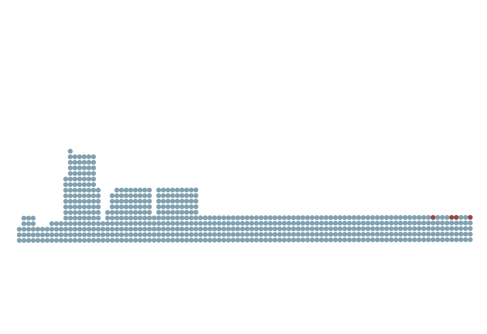
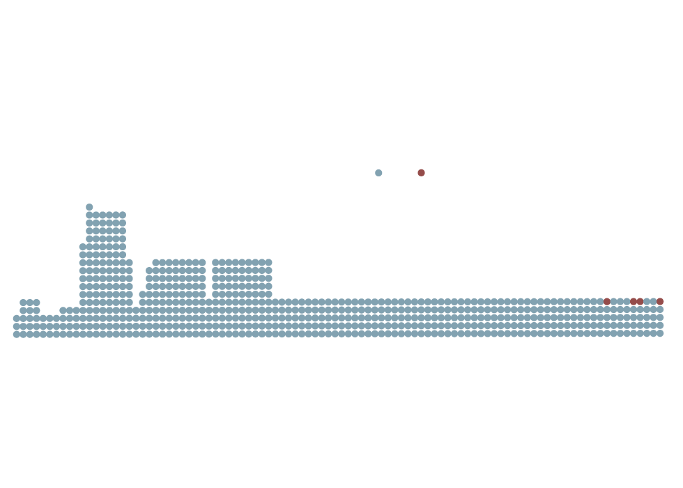
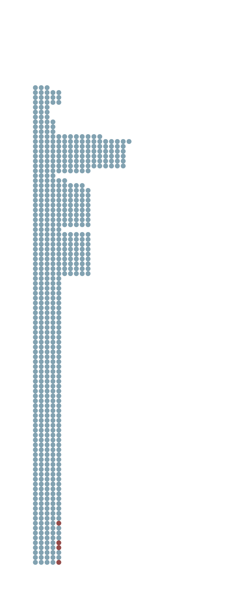

On March 15, Autumn Durald Arkapaw made history as she climbed the stage at the Dolby Theatre in Hollywood to accept the Academy Award for Best Cinematography. The 46-year-old director of photography became the first woman to win the film industry’s most prestigious award in this category, for her work on Sinners — one of 2025’s most celebrated films. While the evening was filled with glamour and viral celebrity moments, this recognition may stand out as the most noteworthy
Historically, women have been largely absent from the race for Best Cinematography, rarely even nominated. The first woman to receive such recognition was Rachel Morrison for her work on Mudbound in 2017, at the 90th Academy Awards.
That milestone was followed by only two more nominations: Ari Wegner for The Power of the Dog in 2021, and Mandy Walker for Elvis in 2022. Then came Arkapaw’s win.

Oscars For Female Cinematographers Are Rare
In the 98-year history of the Academy Awards, only four women have ever been nominated for Best Cinematography.
Autumn Durald Arkapaw is the first to win.
Academy Awards nominations for men and women.
Rachel Morrison (2017) becomes the first woman nominated for Best Cinematography.
Autumn Durald Arkapaw (2025) becomes the first woman to win the award.
2025
1928
2017
Each dot represents a nominee in the Best Cinematography category. Earlier years include unofficial nominations that were considered for the award but not announced during the ceremony.
Source: The Academy Awards Database

Oscars For Female Cinematographers Are Rare
In the 98-year history of the Academy Awards, only four women have ever been nominated for Best Cinematography. Autumn Durald Arkapaw is the first to win.
Academy Awards nominations for men and women.
Rachel Morrison (2017) becomes the first woman nominated for Best Cinematography.
Autumn Durald Arkapaw (2025) becomes the first woman to win the award.
2025
1928
2017
Each dot represents a nominee in the Best Cinematography category. Earlier years include unofficial nominations that were considered for the award but not announced during the ceremony.
Source: The Academy Awards Database

Oscars For Female Cinematographers Are Rare
In the 98-year history of the Academy Awards, only four women have ever been nominated for Best Cinematography. Autumn Durald
Arkapaw is the first to win.
Academy Awards nominations for men and women.
1928
1929
1930
1931
1932
1933
1934
1935
1936
1937
1938
1939
1940
1941
1942
1943
1944
1945
1946
1947
1948
1949
1950
1951
1952
1953
1954
1955
1956
1957
1958
1959
1960
1961
1962
1963
1964
1965
1966
1967
1968
1969
1970
1971
1972
1973
1974
1975
1976
1977
1978
1979
1980
1981
1982
1983
1984
1985
1986
1987
1988
1989
1990
1991
1992
1993
1994
1995
1996
1997
1998
1999
2000
2001
2002
2003
2004
2005
2006
2007
2008
2009
2010
2011
2012
2013
2014
2015
2016
Rachel Morrison becomes the first woman nominated for Best Cinematography.
2017
2018
2019
2020
2021
2022
2023
2024
Autumn Durald Arkapaw becomes the first woman to win the award.
2025
Each dot represents a nominee in the Best Cinematography category. Earlier years include unofficial
nominations that were considered for the award but not announced during the ceremony.
Source: The Academy Awards Database
And that’s not the only record she set that night. Arkapaw is also the first woman of color to be nominated for and to win in this category.
While accepting the Hollywood’s favorite award, Arkapaw thanked the women who supported her work and paid tribute to cinematographers who influenced her — Rachel Morrison and Ellen Kuras. She then asked the women in the room to stand. “I feel like I don’t get here without you guys,” she said, as the crowd rose in applause.